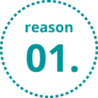
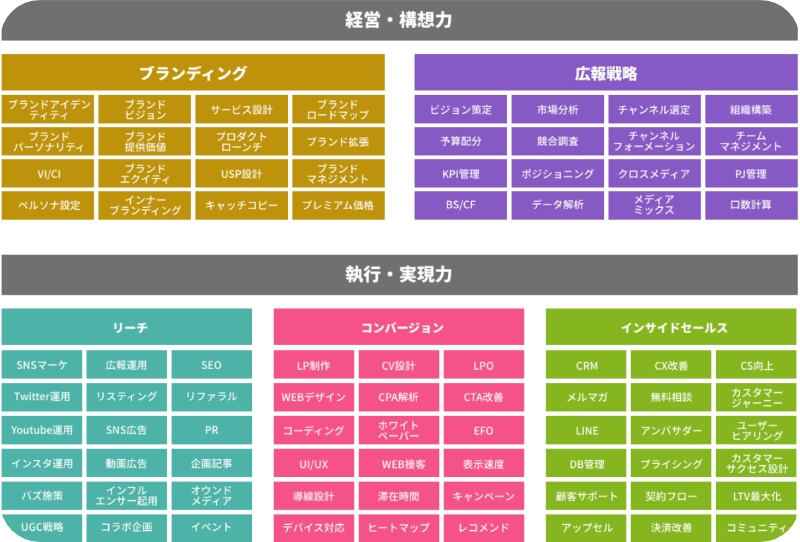
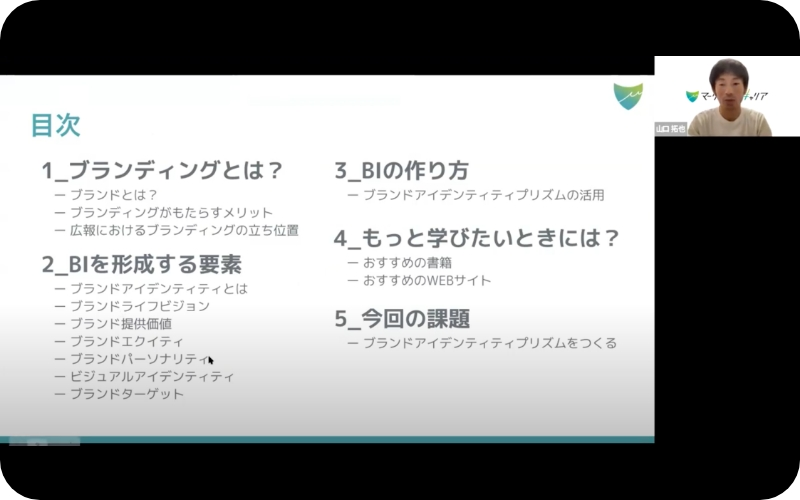
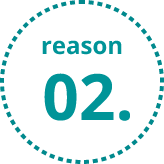
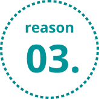
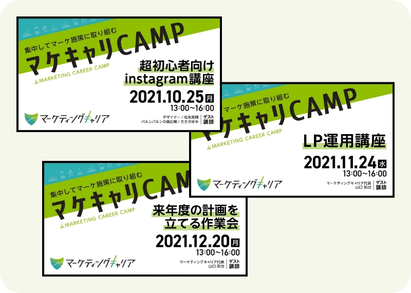
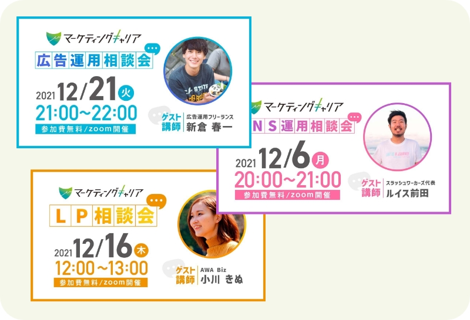

無料カウンセリングで
相談してみる
仕事に活かせるスキルが学べる実践型マーケティングスクール
ABOUT実践を通してマーケティングが学べるオンラインスクール
広告運用だけでなくマーケティング全般が体系的に学べて、
ワークショップや現役メンターとのマンツーマン面談を通して実践的なマーケティングを学ぶことができます。
講座が終わった後も学習・相談ができるので、学んで終わりではなくしっかりと仕事に活かすことができます。
-
オンラインでの
ライブ講座 -
現役マーケターによる
個別コンサルティング -
講座後も10ヶ月の
サポートプログラム
REASONSマーケティングキャリアが選ばれる３つの理由
 仕事に活かせるマーケティングが学べるカリキュラム

広告運用だけじゃない！ブランディングから
インサイドセールスまで広い範囲が学べる
「マーケティングスクールを検討しているけど、広告運用に関するカリキュラムしかない」という経験はありませんか？マーケティングを仕事に活かすためには、広告運用だけでなくマーケティングについて広く学ぶ必要があります。
マーケティングキャリアでは、サービス構想から実行までの流れを全て学べるので、仕事に活かせる具体的な知識が身に付きます。

体系的なオンライン講座と実践的なワークショップで、仕事に活かせる知識が身に付く
毎週開催される全8回のオンライン講座では、各テーマに沿った知識を体系的に学ぶことができます。リアルタイムで開催されているため、疑問点がある場合はその場で講師に質問が可能。講座後にはワークショップが行われ、各グループに分かれあなたのマーケティング課題に対する具体的な施策を考えることができます。
 経験豊富なプロの現役マーケターとのマンツーマン面談
講師は経験豊富なプロの現役マーケターのみ
講師は全員、経験豊富なプロマーケター陣です。大手広告代理店のマーケティング担当、正社員を経て独立したフリーランスマーケター、自身の事業のマーケティング戦略を実行している事業主など、さまざまなバックグラウンドの講師が揃っています。現役で活躍している講師だからこそ学べる最新のマーケティング情報について知ることができます。
毎週30分のマンツーマン面談で、具体的なマーケティング施策の実行まで可能
毎週行われるマンツーマンの面談で、あなたのマーケティング課題に取り組むことができます。マーケターの方であれば担当している案件について、経営者・フリーランスの方であれば自社のマーケティング戦略を一緒に考えることができます。現役マーケターがアドバイスしてくれるため、具体的な施策の実行まで落とし込むことが可能です。
 講座終了後も、10ヶ月間のサポートプログラム付き

最新のマーケティングが学べる講座＆ワークショップを月に1回開催
Instagram運用・LP改善・LINEマーケティング・リスティング広告運用など、現役で活躍しているマーケターが月に1回講座を開催し、最新のマーケティングについて学ぶことができます。講座後にはワークショップも開催され、具体的なクリエイティブ作成に取り組んだり、あなたが今抱えている課題を相談することができます。

広告運用、SNS運用、LP設計など専門的な知識を持つプロへの相談会を毎週開催
毎週1時間ほどの相談会が開催されており、広告運用・SNS運用・LP設計についてプロのマーケターに相談することができます。今取り組んでいる案件の相談はもちろん、あなたの事業の課題についても相談が可能。講座が終わった後も相談できる場が定期的に設けられているので、安心して受講することができます。
VOICES 受講生の声
ライブ講座＋毎週の講師とのマンツーマン面談で、確実に自分の事業が進んだ
LPの制作とホームページの改良を目的に受講したのですが、現在の状態までもってこられたのはこの講座のおかげです。8回のライブ講座に加えて、毎週同じ講師が1対1で面談をしてくださるので、細かいところまで質問できるだけでなく、先週からの進捗が見えやすいことも魅力でした。動画教材や本では得られない学びがあり、自分の事業も進んだ実り多い講座でした。
個人的には、受講料は自分の事業ですぐ取り返せるレベルだと思います。受講料が理由で参加するかどうか悩んでる人がいるとしたら、非常にもったいないです。お金がネックで後回しにするぐらいでしたら、早いところ受講をして、自分の事業を推し進めて早く回収することをオススメします！
講座を受けてビジネスモデルを変更後、月売上が100万から300万へ
マケキャリを受けて良かったのは、「マーケティング」という曖昧で良く分からなかったものを体系的に学ぶことで、全体概要を理解できたことです。受講前は聞きかじった知識でどうにか自社のサービスを組み立てていたのですが、講座を通じて様々な視点からブランドコンセプトを考えられたことで、それまでバラバラだったものを体系化して1つのブランドにまとめることができました。
自分のプロダクトを持っている人には特におすすめです。講座に加えて毎週の個別面談がついていてこの料金であればとても安いと感じています。実際自分も講師の方々からアドバイスをいただきビジネスモデルを変更したことで、受講前100万円前後だった売上を300万円まで伸ばすことができ、とても感謝しています。
率直な感想は「とにかく受講して良かった！」サービスリリースにより収入もアップ
マーケティングキャリアでの幅広い学びは、マーケター以外のお仕事にも応用がきくと実感しています。私は講座のおかげで大好きな営業を仕事にしていけそうですし、自分のサービスも講座内にLPを完成&リリースまでもっていけたので良かったです。また講座作ったLPをポートフォリオとしてセールスライティングの仕事もするようになり、収入もあがりました！
現役のマーケター・デザイナーの経験談や知識が参考に
毎回楽しく受講させていただきました！講師/受講生ともに穏やかな方が多く、まったりアットホームな雰囲気だったのもよかったです。「基本のキ」を抑えつつ、現役のマーケターさん・デザイナーさん目線のお話や経験談、知識をご紹介いただけてとても参考になりました。みなさん本当に優しく、わかりやすい説明やアドバイスのおかげで自身のLPがリリースできました！
まずはお気軽にご相談ください！
「マーケティング施策をどう実践すればいいか分からない…」
「実際に成果を出すことができるか不安…」
「どんな人たちが受講しているの…？」
最適なコース選びはもちろん、どういった成果やアウトプットが出せるのか、
どんな施策をやるべきか、などお答えしています。
マーケティング関連の事業相談も行いますので、お気軽にお申込みください。
カウンセラーはどんな人？
山口拓也マーケティングキャリア代表
大学在学中から人材業界でSNSマーケティングを担当。独立後はオウンドメディアの運用代行、WEBサイトの制作/運用を主に行っていました。
自社事業として、キャリア支援スクールやコワーキングスペースの運営を行なっています。
SELF TEST マーケティング適正診断
公式ラインアカウントにてマーケティング適正診断を行なっています。
いくつかの質問に回答すると「今の自分はどのマーケティングを学ぶべきか？」がわかりますので、
気になる方は診断してみてください。